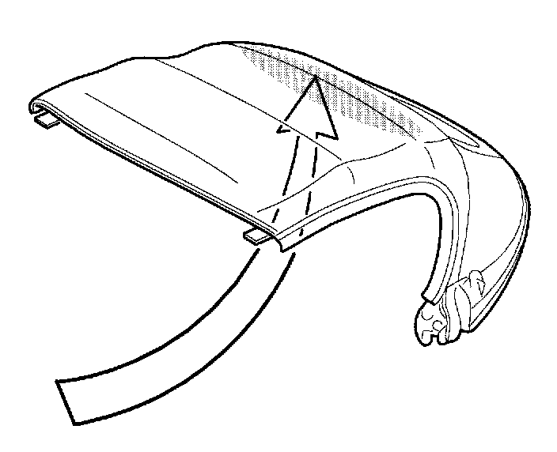

Convertible Top - White Stains Inside
Bulletin No.: 010/99Issued: 06/04/99
Revised:
Section
09
Applicable Model/s
1999 Miata
Subject
WHITE STAINS ON INSIDE OF SOFT TOP
APPLICABLE MODEL(S)/VINS
All 1999 Miata with VINs lower than JM1 NB353*XO 120401.
DESCRIPTION
White stains may be visible on the inside surface of the soft top. This may be caused during production when a steam process is applied to remove any wrinkles in the soft top. These stains are caused by moisture remaining in the folds. To resolve this concern the steam process has been eliminated.
Customers having this concern should have their vehicle repaired using the following procedure.
REPAIR PROCEDURE
1. Verify customer concern.

2. Clean the stained area with a soft clean rag soaked with isoprophyl alcohol.
Warning
When working with isoprophyl alcohol, be sure to follow the precautions on the label of container.
- If the stain is not completely removed, wet a clean rag
with distilled water and dab the area. Repeat as necessary.
- if the stain is removed, proceed to STEP 3.
3. Dry the area with a clean lint-free cloth.
4. Verify repair.
WARRANTY INFORMATION
Note
^ This information applies to verified customer complaints on vehicles covered under normal warranty. Refer to the SRT microfiche for warranty term information.
^ Be sure to include color code in Part Number Main Cause ( blue - 44, black - 66, tan - 88).
Warranty Type A
Symptom Code 98
Damage Code 9F
Part Number Main Cause NC1O R1 210D**
Quantity 0
Operation Number / Labor Hours XX1O8XRX / 0.2 (cleaning and cost of isoprophyl alcohol)